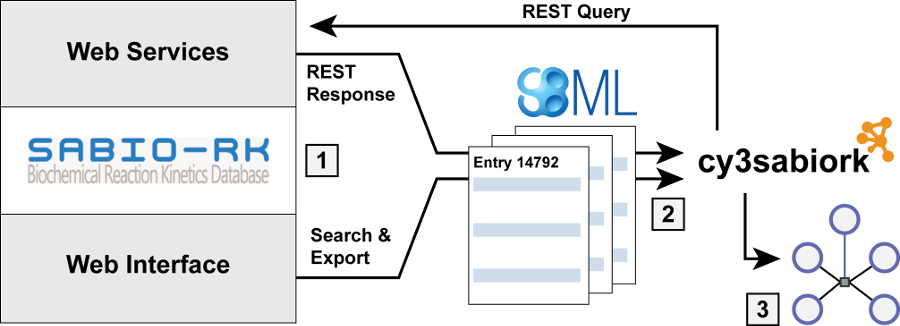
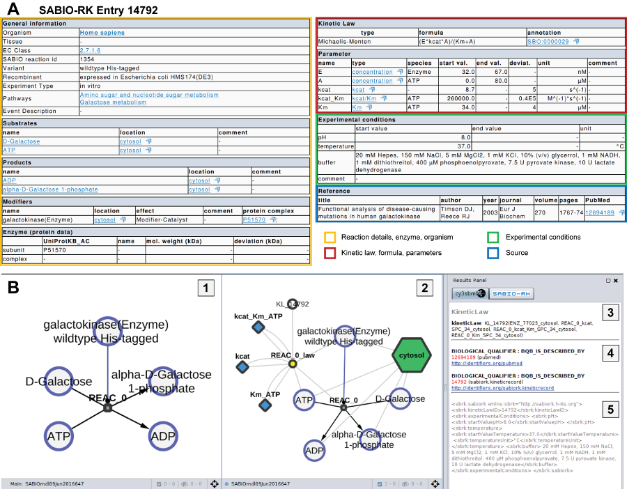

cy3sabiork provides access to SABIO-RK information via web services with the typical workflow consisting of three steps:

Below an overview for the kinetic information and visualization for a single SABIO-RK Kinetic Law entry. The entry 14792 for galactokinase (EC:2.7.1.6, UniProtKB:P51570) was retrieved via the web service query http://sabiork.h-its.org/sabioRestWebServices/kineticLaws/14792 (kineticLaws/14792) and than loaded with cy3sabiork.

Entries for given Kinetic Law Ids can be retrieved via the Kinetic Law Entries tab.
For instance retrieving a single entry via
kineticLaws/14792 or multiple entries via kineticLaws?kinlawids=48020,49160,44091,48027.
SABIO-RK entries can be searched based on combinations of keyword:term searches. The keywords are identical to those used in the web interface for forming queries. Multiple keyword:term fields may be combined using the AND operator to form complex queries.
For instance find all Kinetic Law Entries for spleen in Homo sapiens: Tissue:"spleen" AND Organism:"Homo sapiens"
The following keywords may be used to form queries to search for entries:
| Entry | |
| EntryID | SABIO-RK entry ID (e.g. EntryID:"123") |
| Reaction/Pathway | |
| Pathway | The name of the reaction pathway (e.g. Pathway:"urea cycle") |
| KeggReactionID | KEGG ID for the reaction (e.g. KeggReactionID:"R00782") |
| SabioReactionID | SABIO-RK ID for the reaction (e.g. SabioReactionID:"14") |
| Compound | |
| AnyRole | Compound found in any role in a reaction (e.g. AnyRole:"oxygen") |
| Substrate | Compound acting as a substrate in a reaction (e.g. Substrate:"ATP") |
| Product | Compound acting as a product in a reaction |
| Inhibitor | Compound acting as an inhibitor modifier in a reaction |
| Catalyst | Compound acting as a catalyst modifier in a reaction |
| Cofactor | Compound acting as a cofactor in a reaction |
| Activator | Compound acting as an activator in a reaction |
| OtherModifier | Compound acting as a modifier not specified above, in a reaction |
| PubChemID | PubChem ID of a compound |
| KeggID | KEGG ID of a compound |
| ChebiID | Chebi ID of a compound |
| SabioCompoundID | |
| Enzyme | |
| Enzymename | An enzyme may included in the search parameters by name (e.g.
Enzymename:"galactokinase")
|
| ECNumber | An enzyme may included in the search parameters by EC Class number (e.g.
ECNumber:1.1.1.2)
|
| UniProtKB_AC | Protein as listed in UniProtKB (e.g. UniProtKB_AC:A1VCV2) |
| EnzymeType | Type of the enzyme, only valid queries are EnzymeType:"mutant" or EnzymeType:"wildtype"
|
| Biological Source | |
| Tissue | The name of the tissue (e.g. Tissue:"liver") |
| Organism | The name of the organism (e.g. Organism:"homo sapiens") |
| CellularLocation | Location within the cell that a kinetic reaction takes place (e.g. CellularLocation:"leucoplast")
|
| Kinetic Data | |
| Parametertype | Experimental parameter specified in the kinetic law entry (e.g. Parametertype:"Vmax")
|
| KineticMechanismType | Mechanism for the kinetic data (e.g. KineticMechanismType:"rapid equilibrium") |
| AssociatedSpecies | Species which is associated with a parameter (e.g. AssociatedSpecies:"ATP" |
| Publication | |
| Title | Publication within which the kinetic law data is published, by title |
| Author | Publication within which the kinetic law data is published, by author (e.g. Author:"Shelton
E")
|
| Year | Year of publication (e.g. "Year:2010") |
| PubMedID | Publication within which the kinetic law data is published, by PubMed ID (e.g. PubMedID:13538975)
|
| InfosourceType | Source of the data, valid queries are InfosourceType:"Journal" or InfosourceType:"direct
submission" |
| DateSubmitted | Earliest possible date from which the entry exists in SABIO-RK (e.g. DateSubmitted:"27/10/2010")
|
| Range options | |
| TemperatureRange | Range of temperatures (e.g. TemperatureRange:"[36.9 TO 37.1]") |
| pHValueRange | Range of pH values (e.g. pHValueRange:"[6.9 TO 7.1]") |
| Boolean options | |
| hasKineticData | Entry specifies a rate equation (e.g. hasKineticData:"true") |
| IsRecombinant | Entry has recombinant data (e.g. IsRecombinant:"false") |